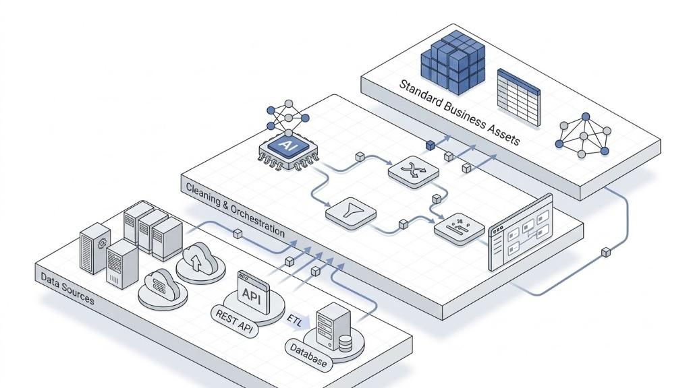

DIP 决策智能平台系统架构
基于 DOMA 架构的核心 Ontology 层，实现从数据接入到智能决策的全链路能力

深入业务场景的智能决策实践
平台
依托自动化流水线与 AI 算子，解决多源异构数据的来源与组织难题，淬炼出业务所需的干净数据底座。
将底层数据转换为业务人员易懂的实体对象，并灵活建立对象间的级联网状关联，构筑坚实的企业业务图谱。
提供可视化、穿透式、问答式、报告式四维探索能力，从单一对象出发沿关系链全景下钻，辅助精准决策。
连接异构数据源，可视化配置转换与 AI 解析节点，将复杂原始数据洗练为标准业务资产。
智能识别数据特征，自动推荐标识与数据类型，极简操作即可完成业务对象实例化，构建企业知识中枢。
动态配置多对象间关联规则，在关系网络视图中支持双击下钻，实现多层级链路的穿透查询。
在本体层面定义可执行动作与业务联动规则。例如调整状态时自动触发内部协同或流转，实现真闭环。

基于 DOMA 架构的核心 Ontology 层，实现从数据接入到智能决策的全链路能力
提供贯穿全系统的文本解析、实体识别与语义理解能力。支持对接外部大模型，亦可平滑替换为企业自研私有模型，全方位保障核心数据安全。
业务本体库全面开放，提供标准 API 与 OSDK 工具包接入。同时提供安全合规的云服务环境（含私有云、On-Premise 与 Air-Gapped 部署），为企业构建专属资源池。